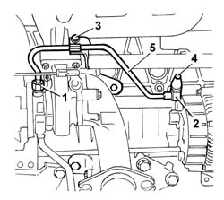

1084B40 ENGINE OIL DELIVERY PIPE TO TURBOCHARGER - R + R
- Path
- Procedures > 10 ENGINE UNIT > 1084 ENGINE LUBRICATION SYSTEM > 1084B ENGINE OIL LUBRICATION CIRCUIT > 1084B40 ENGINE OIL DELIVERY PIPE TO TURBOCHARGER - R + R
- Kind
- repair procedure (removal / refitting; the operation number is the code)
- Applies to
- engines: 2.3 JTD 16V, 2.8 JTD 8V; all production periods
- Interactive page
- https://sloeber94.github.io/elrnDB-fDct/en/#/244000931
Applies to: engines: 2.3 JTD 16V; all production periods
- Separate the turbocharger and exhaust manifold at the bench, then remove the oil delivery pipe with reference to the specific turbocharger removal operation:
See in Op. 1064A19
Applies to: engines: 2.8 JTD 8V; all production periods
 Removing
Removing
 Refitting
RefittingOp. 7055B54 UNDER-ENGINE GUARD - R R
1. Undo the turbo connector.
2. Undo the crankcase connector.
3. Undo the bolt fixing the mounting bracket.
4. Undo the engine oil pressure switch complete with connector and move it aside.
5. Remove the pipe.

Applies to: engines: 2.8 JTD 8V; all production periods
Refitting
Removing- Fit the pipe in position and tighten the bolts and connectors including the engine oil pressure switch.